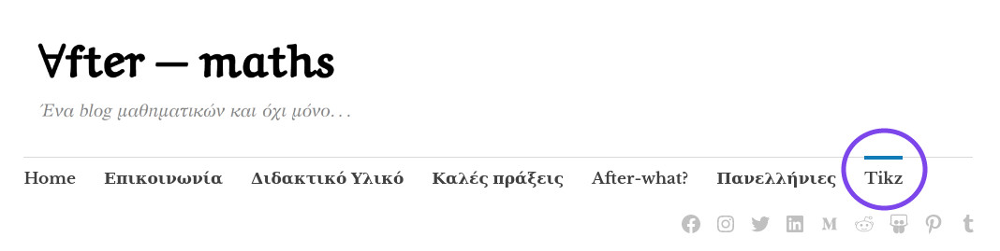
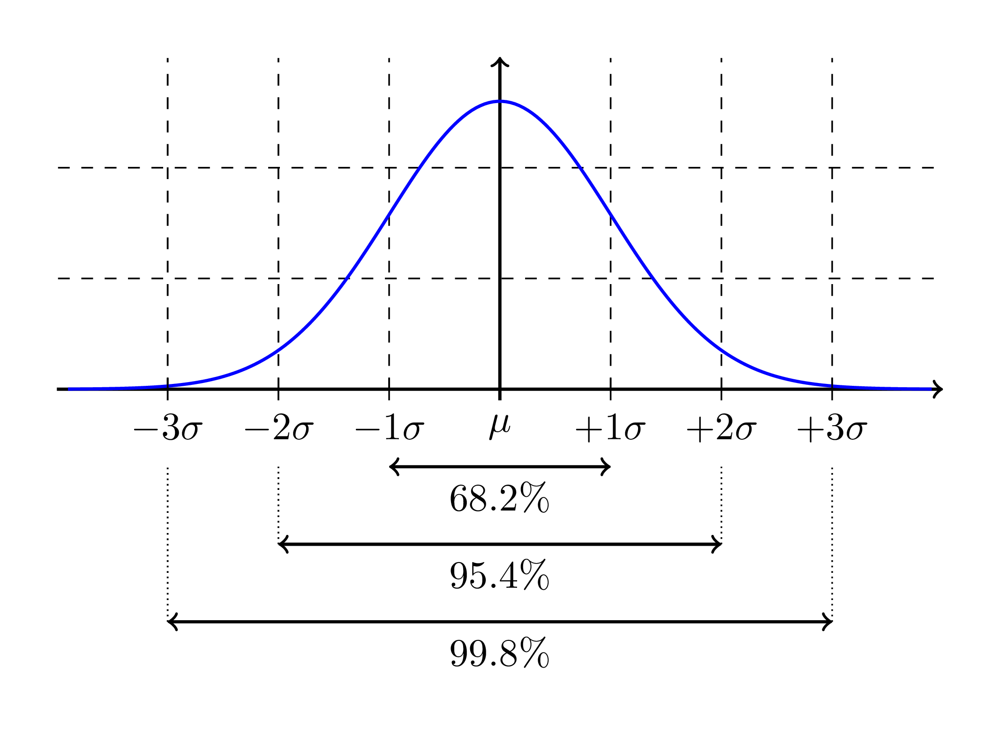

Τα σχήματα της εβδομάδας! (1)#
Ο πίνακας Είσοδος στο χωριό Voisins του Camille Pissarro.#
Θα έχετε παρατηρήσει ότι στο aftermaths πρόσφατα δημιουργήθηκε μία νέα σελίδα, που αφορά αμιγώς το Tikz. Αν δεν το έχετε προσέξει, να βοηθήσουμε λίγο, είναι αυτή εδώ:

Μία νέα σελίδα μόλις γεννήθηκε!#
Τώρα που την είδατε, να την επισκέπτεστε τακτικά. Εκεί θα ανεβαίνουν συχνά πυκνά - κάθε μέρα είναι η αρχική πρόθεση, εκτός ίσως από αργίες και τα συναφή ;) - διάφορα σχήματα φτιαγμένα αποκλειστικά στο tikz. Βασικά, τα περισσότερα σχήματα έχουν ήδη κάνει την εμφάνισή τους είτε σε κάποια σχετική δημοσίευση είτε σε κάποιο πακέτο με σημειώσεις, είτε σε κάποιο διαγώνισμα είτε, κάπου, τέλος πάντων, στον κόσμο του διαδικτύου. Αυτό που θα βρείτε παραπάνω στη νέα μας σελίδα είναι ο κώδικας πίσω από το σχήμα - πώς λέμε, ο άνθρωπος πίσω από τον θρύλο, ένα πράγμα. Σε κάποιες περιπτώσεις, ίσως ο κώδικας να έχει και κάποια σχόλια σχετικά με διάφορες εντολές του, αλλά, εν γένει, θα είναι μόνο ο κώδικας.
Όμως, επειδή κρίμα είναι να υπάρχει μία σελίδα με κάτι τόσο απρόσωπο, κάθε εβδομάδα - λογικά κάθε Τρίτη, αλλά όχι και σίγουρα - θα υπάρχει ένας εκτενής σχολιασμός των σχημάτων που ανέβηκαν την προηγούμενη εβδομάδα, έτσι ώστε όχι μόνο να βλέπουμε τον κώδικα, αλλά και να καταλαβαίνουμε πώς δουλεύει - στο βαθμό, βέβαια, που μας απασχολεί. Ας ξεκινήσουμε, λοιπόν, με τα σχήματα που είδαμε την προηγούμενη εβδομάδα:
Μία κλασσική συνάρτηση…#
Το πρώτο μας σχήμα ήταν η γραφική παράσταση της συνάρτησης:
η οποία μοιάζει κάπως έτσι:

Απλή, λιτή και απέριττη γραφική παράσταση!#
Ο σχετικός κώδικας είναι ο ακόλουθος:
\documentclass[tikz, margin=5mm]{standalone}
\begin{document}
\begin{tikzpicture}
\draw[dashed] (-2.99,-2.99) grid (2.99,2.99);
\draw[thick, ->] (-3,0) -- (3,0)node[pos=1,below]{$x$};
\draw[thick, ->] (0,-3) -- (0,3)node[pos=1,left]{$y$};
\draw[thick, domain={-3}:{0}, samples=100] plot (\x,{\x+1});
\draw[thick, domain={0}:{3}, samples=100] plot (\x,{\x});
\node[circle, draw=black, inner sep=1.5pt, fill=white](a) at (0,1){};
\node[circle, draw=black, inner sep=1.5pt, fill=black](b) at (0,0){};
\end{tikzpicture}
\end{document}
Το standalone που βλέπετε στο είδος του αρχείου είναι κάτι που θα χρησιμοποιούμε συνεχώς. Πρακτικά, απλά μας λέει ότι το αρχείο μας θα έχει αυθαίρετες διαστάσεις, έτσι ώστε να αγκαλιάζει το περιεχόμενό του, ενώ με την παράμετρο margin=5mm καθορίζουμε ότι θα έχει ένα περιθώριο 5 χιλιοστών γύρω από το περιεχόμενο. Επίσης, με την παράμετρο tikz φορτώνουμε το πακέτο tikz, όπως φαντάζεστε - αυτό δε γίνεται με κάθε πακέτο, γι” αυτό και τα υπόλοιπα θα τα φορτώνουμε με την εντολή \usepackage.
Τώρα, στο δια ταύτα, το παραπάνω σχήμα είναι αρκετά απλό, καθώς τα πάντα είναι όμορφες, κομψές γραμμές - απλά κάποιες έχουν fancy styling. Πράγματι, οι δύο άξονες είναι δύο απλές γραμμές που απλά τελειώνουν με ένα -> - αν στον φυλλομετρητή σας εμφανίζεται αντί του -> η συμβολοσειρά -> - τότε υπάρχει κάποιο μικρό ζήτημα κωδικοποίησης (όπως και να έχει, στον κώδικά μας γράφουμε κανονικά ->). Παρατηρήστε, επίσης, πώς στο τέλος κάθε γραμμής έχουμε προσθέσει κι από έναν κόμβο με το όνομα του άξονα. Αυτό είναι μία ωραία συντόμευση που μας επιτρέπει να κάνουμε το \(\LaTeX\) αντί να δημιουργήσουμε ξεχωριστά έναν νέο κόμβο - όπως κάνουμε παρακάτω. Οι παράμετροι pos και below καθορίζουν τη θέση αυτών των κόμβων σε σχέση με τη γραμμή που έχουμε σχεδιάσει. Για την ακρίβεια, το pos παίρνει τιμές συνήθως από 0 έως 1 - μπορεί και εκτός αυτών - με το 0 να σημαίνει την αρχή της γραμμής και το 1 το τέλος της. Τώρα, για το below δε νομίζω να χρειάζεται να εξηγήσουμε κάτι - ξαδερφάκια του είναι και τα top, left και right.
Επίσης, έχουμε σχεδιάσει κι ένα πλέγμα πίσω από τους άξονες. Η αλήθεια είναι ότι πάντοτε έβρισκα τα πλέγματα ιδιαίτερα χρήσιμα, καθώς μπορεί κανείς εύκολα να παρατηρήσει ένα σχήμα χωρίς να μπλέκει με πολλούς αριθμούς στους άξονες κι άλλα τέτοια κακά - όχι, βέβαια ότι είναι πανάκεια και τα πλέγματα. Για το πλέγμα επιλέξαμε να αποτελείται από διακεκομμένες και όχι παχιές γραμμές, έτσι ώστε να μην έρχεται οπτικά στο ίδιο επίπεδο με τους άξονες - αν και αυτό είναι, σαφώς, υποκειμενικό. Τώρα, πέρα από το πλέγμα έχουμε σχεδιάσει και τις δύο γραμμές που αποτελούν την γραφική παράσταση της συνάρτησής μας. Βέβαια, όπως βλέπετε, δεν έχουμε σχεδιάσει απλώς δύο γραμμές, αλλά χρησιμοποιήσαμε την παράμετρο plot. Αυτό, κατά βάση, έγινε για λόγους βαρεμάρας, καθώς κάλλιστα θα μπορούσαμε να είχαμε σχεδιάσει δύο ευθείες γραμμές, όπως κάναμε και με τους άξονες. Απλά, με την plot δεν έχουμε να ασχολούμαστε με την αρχή και το τέλος της ευθείας, παρά μόνο με το πεδίο ορισμού της - η plot γενικά χρησιμοποιείται συνήθως για να σχεδιάζει κανείς συναρτήσεις το οποίο καθορίζεται από την παράμετρο domain={}:{}.
Τέλος, έχουμε συμπεριλάβει στο σχήμα μας και δύο κόμβους οι οποίοι αντιστοιχούν στα δύο κυκλάκια - ένα «μαύρο» κι ένα «άσπρο» - που έχει το σχήμα. Το συντακτικό που ακολουθούμε για να σχεδιάσουμε έναν κόμβο είναι το εξής:
\node[parameters](name) at (location){label};
Το όνομα δεν είναι υποχρεωτικό να το δίνουμε και στο παραπάνω σχήμα, η αλήθεια είναι, δεν το αξιοποιούμε κάπως. Αυτό που είναι υποχρεωτικό να υπάρχει, ακόμα και κενό, είναι η ετικέτα του κόμβου - το label.
Μία άλλη… συνάρτηση#
Το επόμενο σχήμα μας είναι αυτό:

Εντάξει, δεν είναι τόσο απλή όσο η προηγούμενη γραφική παράσταση…#
Ο αντίστοιχος κώδικας είναι ο εξής:
\documentclass[tikz, margin=5mm]{standalone}
\usepackage{xfrac} % Used to load to \sfrac command which typesets nice inline fractions.
\begin{document}
\begin{tikzpicture}
\draw[dashed, step=3] (-0.49,-0.49) grid (3.99,3.99);
\draw[thick, ->] (-.5,0) -- (4,0)node[pos=1,below]{$x$};
\draw[thick, ->] (0,-.5) -- (0,4)node[pos=1,left]{$y$};
\draw[thick, domain={0}:{3}, samples=100] plot (\x,{\x});
% \draw[thick, domain={0}:{3}, samples=100] plot (\x,{\x});
\node[circle, draw=black, inner sep=1.5pt, fill=white, label={right,yshift=8pt}:{(1,1)}](a) at (3,3){};
\node[circle, draw=black, inner sep=1.5pt, fill=white, label={left,yshift=-8pt}:{(0,0)}](b) at (0,0){};
\node[circle, draw=black, inner sep=1.5pt, fill=black, label={left}:{$(0,\sfrac{1}{2})$}](c) at (0,1.5){};
\node[circle, draw=black, inner sep=1.5pt, fill=black, label={right}:{$(1,\sfrac{1}{2})$}](d) at (3,1.5){};
\end{tikzpicture}
\end{document}
Εδώ δεν έχουμε και πολλά διαφορετικά πράγματα να παρατηρήσουμε, είναι η αλήθεια. Οι άξονές μας είναι σχεδιασμένοι με τον τρόπο που αναλύσαμε στο πρώτο σχήμα, η γραφική παράσταση επίσης, το πλέγμα επίσης, οι κόμβοι επίσης. Βασικά, η αλήθεια είναι ότι το πλέγμα δεν ήταν απαραίτητο, καθώς θα μπορούσαμε να είχαμε σχεδιάσει απλά δύο γραμμές. Αλλά, με αφορμή το παραπάνω πλέγμα, ας συζητήσουμε για την παράμετρο step. Η παράμετρος αυτή καθορίζει, όπως ίσως φαντάζεστε, το κάθε πόσα εκατοστά θα εμφανίζονται οι γραμμές στο πλέγμα μας, επομένως εμείς έχουμε επιλέξει στο παραπάνω σχήμα να εμφανίζονται κάθε 3 εκατοστά.
Ας συζητήσουμε τώρα και λίγο για τις παραμέτρους των κόμβων, αν και η αλήθεια είναι ότι οι περισσότερες είναι αρκετά κοντά στη διαίσθηση. Για αρχή, να επισημάνουμε ότι δεν παίζει ρόλο η σειρά τους, αλλά ένεκα copy-paste συνήθως είναι η ίδια - τουλάχιστον σε ό,τι αφορά το ίδιο σχήμα. Τώρα, στο διά ταύτα, η πρώτη παράμετρος, circle, καθορίζει, όπως φαντάζεστε, το σχήμα του κόμβου. Η δεύτερη παράμετρος, draw=black, καθορίζει το χρώμα του περιγράμματος του κόμβου και, αντίστοιχα, η fill=black καθορίζει το χρώμα γεμίσματος του κόμβου. Τώρα, περνώντας στις λίγο πιο περίεργες παραμέτρους, η παράμετρος inner sep=... καθορίζει την ελάχιστη απόσταση του περιγράμματος του κόμβου από το περιεχόμενό του. Στην περίπτωσή μας, όπου ο κόμβος δεν έχει κάποιο περιεχόμενο - η ετικέτα του είναι κενή - η παράμετρος inner sep καθορίζει επί της ουσίας την ακτίνα του κόμβου - μιας και μιλάμε για κύκλο. Τέλος, η παράμετρος label={}:{} καθορίζει την ετικέτα του κόμβου, απλά με λίγο διαφορετικό τρόπο από ότι η παράμετρος {label} που είδαμε στο προηγούμενο σχήμα. Για την ακρίβεια, με την παράμετρο label={}:{} καθορίζουμε την ετικέτα του κόμβου δίνοντας τη σχετική της θέση χωρίς οι παράμετροι που δίνουμε να επηρεάζουν τη θέση του κόμβου. Έτσι, για παράδειγμα, αν αντί της γραμμής:
\node[circle, draw=black, inner sep=1.5pt, fill=black, label={left}:{$(0,\sfrac{1}{2})$}](c) at (0,1.5){};
Είχαμε γράψει:
\node[circle, draw=black, inner sep=1.5pt, fill=black, left](c) at (0,1.5){$(0,\sfrac{1}{2})$};
θα είχαμε οπτικά το ίδιο αποτέλεσμα, απλά πιο αριστερά. Όταν η παράμετρος left βρίσκεται στη λίστα παραμέτρων του ίδιου του κόμβου, τότε επηρεάζει την τοποθέτηση όλου του κόμβου, ενώ αν βρίσκεται στην πρώτη λίστα της παραμέτρου label={}:{} τότε επηρεάζει μόνο τη σχετική θέση της ετικέτας και όχι του ίδιου του κόμβου.
Μία οπτική απόδειξη…#
Το επόμενο σχήμα μας είναι αυτό:
![Μία απόδειξη ότι το [0,1] και το (0,1) είναι ισοπληθικά.](../../_images/fig_310.png)
Μία απόδειξη ότι το [0,1] και το (0,1) είναι ισοπληθικά.#
Ο αντίστοιχος κώδικας είναι ο εξής:
\documentclass[tikz, margin=5mm]{standalone}
\usepackage{xfrac} % Used to load to \sfrac command which typesets nice inline fractions.
\begin{document}
\begin{tikzpicture}
\draw[thick] (-1,0) -- (8,0);
\draw[thick] (-1,-2) -- (8,-2);
\node[circle, inner sep=1pt, draw=black, fill=black, label={above}:{0}](a0) at (0,0){};
\node[circle, inner sep=1pt, draw=black, fill=black, label={above}:{1}](a1) at (1,0){};
\node[circle, inner sep=1pt, draw=black, fill=black, label={above}:{$\sfrac{1}{2}$}](a2) at (2,0){};
\node[circle, inner sep=1pt, draw=black, fill=black, label={above}:{$\sfrac{1}{3}$}](a3) at (3,0){};
\node[circle, inner sep=1pt, draw=black, fill=black, label={above}:{$\sfrac{1}{4}$}](a4) at (4,0){};
\node[circle, inner sep=1pt, draw=black, fill=black, label={above}:{$\sfrac{1}{5}$}](a5) at (5,0){};
\node[circle, inner sep=1pt, draw=black, fill=black, label={above}:{$\sfrac{1}{6}$}](a6) at (6,0){};
\node[circle, inner sep=1pt, draw=black, fill=black, label={above}:{$\sfrac{1}{7}$}](a7) at (7,0){};
\node[circle, inner sep=1pt, draw=black, fill=black, label={below}:{0}](b0) at (0,-2){};
\node[circle, inner sep=1pt, draw=black, fill=black, label={below}:{1}](b1) at (1,-2){};
\node[circle, inner sep=1pt, draw=black, fill=black, label={below}:{$\sfrac{1}{2}$}](b2) at (2,-2){};
\node[circle, inner sep=1pt, draw=black, fill=black, label={below}:{$\sfrac{1}{3}$}](b3) at (3,-2){};
\node[circle, inner sep=1pt, draw=black, fill=black, label={below}:{$\sfrac{1}{4}$}](b4) at (4,-2){};
\node[circle, inner sep=1pt, draw=black, fill=black, label={below}:{$\sfrac{1}{5}$}](b5) at (5,-2){};
\node[circle, inner sep=1pt, draw=black, fill=black, label={below}:{$\sfrac{1}{6}$}](b6) at (6,-2){};
\node[circle, inner sep=1pt, draw=black, fill=black, label={below}:{$\sfrac{1}{7}$}](b7) at (7,-2){};
\draw[thick,->] (a0) -- (b2);
\draw[thick,->] (a1) -- (b3);
\draw[thick,->] (a2) -- (b4);
\draw[thick,->] (a3) -- (b5);
\draw[thick,->] (a4) -- (b6);
\draw[thick,->] (a5) -- (b7);
\end{tikzpicture}
\end{document}
Μεγάλος κώδικας, αλλά κατά βάθος είναι εύκολο να τον γράψει κανείς - copy-paste είναι τα περισσότερα, με μικρο-αλλαγές. Σε ό,τι αφορά τους κόμβους, έχουμε κινηθεί κατά τα γνωστά, όπως και στα προηγούμενα σχήματα. Σε ό,τι αφορά όμως τις γραμμές που τα ενώνουν, έχουμε κάνει μία μικρή τσαχπινιά. Βασικά, όπως θα παρατηρήσατε, σε κάθε κόμβο έχουμε δώσει κι από ένα όνομα - διαφορετικό για τον καθένα τους, σαφώς. Αυτό το κάναμε και στα προηγούμενα σχήματα, αλλά περισσότερο λόγω συνήθειας και όχι τόσο επειδή κάπου μας φάνηκε χρήσιμο. Εδώ, όμως, αυτά τα ονόματα τα χρησιμοποιούμε για να σχεδιάσουμε τα βέλη που ενώνουν τους κόμβους. Για την ακρίβεια, σε κάθε βέλος δίνουμε ως αρχή το όνομα ενός κόμβου - αντί για τις συντεταγμένες του - και ως τέλος το όνομα το κόμβου όπου θέλουμε να καταλήγει το βέλος. Σαφώς και θα μπορούσαμε να είχαμε γράψει τις συντεταγμένες του κάθε κόμβου αντί για το όνομά του με ακριβώς το ίδιο αποτέλεσμα, ωστόσο, χρησιμοποιώντας τα ονόματα που δίνουμε κερδίζουμε δύο πράγματα:
γράφουμε λιγότερο κώδικα και,
αν μεταγενέστερα θέλουμε να αλλάξουμε τις θέσεις των κόμβων, αλλά όχι τις διαδρομές των βελών - π.χ. θέλουμε να αραιώσουμε τους κόμβους μεταξύ τους - τότε αρκεί να αλλάξουμε μόνο τις συντεταγμένες των κόμβων, χωρίς να πειράξουμε τίποτα στα βέλη.
Έτσι, το σχήμα μας γίνεται λίγο πιο δυναμικό και πιο «ανθεκτικό» σε μικρο-αλλαγές.
Η κανονική κατανομή#
Το επόμενο σχήμα μας είναι το εξής:

Η γνωστή και μη εξαιρετέα κανονική καμπάνα.#
Ο αντίστοιχος κώδικας είναι ο εξής:
\documentclass[tikz, margin=5mm]{standalone}
\usepackage{ifthen} % In order to use the ifthenelse structure.
\begin{document}
\begin{tikzpicture}
\draw[thick, ->] (-4,0) -- (4,0);
\draw[thick, ->] (0,-.1) -- (0,3)node[pos=0,below]{$\mu$};
\draw[dashed] (-3.99,0) grid (3.99,2.99);
\draw[thick, domain={-3.9}:{3.9}, samples=200, draw=blue] plot (\x,{2.6*exp(-\x*\x/2)});
\foreach \i in {-3,-2,-1,1,2,3}{
\ifthenelse{\i>0}{
\draw (\i,-.1) -- (\i,.1)node[pos=0,below]{$+\i\sigma$};
}{
\draw (\i,-.1) -- (\i,.1)node[pos=0,below]{$\i\sigma$};
}
}
\draw[thick, <->] (-1,-.7) -- (1,-.7)node[pos=.5,below]{$68.2\%$};
\draw[thick, <->] (-2,-1.4) -- (2,-1.4)node[pos=.5,below]{$95.4\%$};
\draw[thick, <->] (-3,-2.1) -- (3,-2.1)node[pos=.5,below]{$99.8\%$};
\draw[densely dotted] (-2,-1.4) -- (-2,-.7);
\draw[densely dotted] (2,-1.4) -- (2,-.7);
\draw[densely dotted] (-3,-2.1) -- (-3,-.7);
\draw[densely dotted] (3,-2.1) -- (3,-.7);
\end{tikzpicture}
\end{document}
Η αλήθεια είναι ότι αυτό που κατευθείαν χτυπάει στο μάτι στον παραπάνω κώδικα είναι, σαφώς, η δομή επανάληψης \foreach. Αλλά, πριν περάσουμε σε αυτήν, ας συζητήσουμε λίγο για τα υπόλοιπα μικροπράγματα που είναι διαφορετικά. Αρχικά, όπως θα παρατηρεί κανείς, στην εντολή plot με τη βοήθεια της οποίας σχεδιάζουμε τη γραφική παράσταση της καμπάνας της κανονικής κατανομής, έχουμε χρησιμοποιήσει τον ακόλουθο τύπο:
Ο συνήθης τύπος για την τυπική κανονική κατανομή είναι, σαφώς, ο ακόλουθος:
Σε ό,τι έχει να κάνει με τον συντελεστή 2.6 που εμφανίζεται μπροστά από το εκθετικό, έχει καθαρά αισθητική λειτουργία, καθώς έτσι το σχήμα μας γίνεται λίγο πιο ψηλό και φαίνονται κάποιες λεπτομέρειες καλύτερα - εντάξει, θυσιάσαμε λίγη αυστηρότητα εδώ, αλλά είναι για καλό σκοπό. Σε ό,τι έχει να κάνει με το γιατί είμαστε αρκετά αλλοπρόσαλλοι έτσι ώστε να γράψουμε \(x\cdot x\) αντί για \(x^2\) πρέπει να δώσουμε λίγο περισσότερο χρόνο.
Εν γένει, το tikz μας παρέχει όλους τους παραδοσιακούς τελεστές των περισσότερων γλωσσών προγραμματισμού σε ό,τι αφορά τις μαθηματικές πράξεις και τα συναφή. Έτσι, ο φυσιολογικός τρόπος να γράψει κανείς την ύψωση σε δύναμη είναι μέσω του τελεστή ^. Ωστόσο, αρκετά συχνά, το tikz έχει κάποια θέματα στο πώς υπολογίζει δυνάμεις, με αποτέλεσμα συχνά-πυκνά να χάνει είτε σε ακρίβεια είτε ακόμα και το πρόσημο του τελικού αποτελέσματος. Έτσι, αντί για την ύψωση σε δύναμη προτιμούμε τον απλό πολλαπλασιασμό όταν έχουμε να κάνουμε με απλές δυνάμεις - αν τώρα έχουμε μεταβλητό εκθέτη, μπορούμε να χρησιμοποιήσουμε τον τελεστή ^ άφοβα, καθώς ούτως ή άλλως η βάση θα έχουμε φροντίσει να είναι θετική.
Επί το ζουμερότερο, τώρα, στο παραπάνω σχήμα έχουμε χρησιμοποιήσει κι ένα τμήμα κώδικα που έχει μέσα μία δομή επανάληψης. Η αλήθεια είναι ότι η πρώτη φορά που χρειάστηκε να βάλω δομή επανάληψης σε σχήμα ήταν αυτό που λέμε και στο χωριό μου, ένα breakthrough στο πώς βλέπω τα σχήματα. Με τις επαναλήψεις, πολλά κομμάτια βαρετού κώδικα μπορούμε να τα αποφύγουμε. Γενικά, όταν θέλουμε να ξεκινήσουμε μία επανάληψη, χρησιμοποιούμε την εντολή:
\foreach \counter in {list of values}{commands}
Η αλήθεια είναι ότι, modulo την σύνταξη, θυμίζει αρκετά μία τυπική δομή επανάληψης κάποιας άλλης γλώσσας. Αυτό που πρέπει να έχουμε κατά νου είναι ότι εδώ μία δομή επανάληψης μάς χρειάζεται για να σχεδιάσουμε πολλές φορές ένα παρόμοιο σχήμα. Για παράδειγμα, εμείς χρησιμοποιήσαμε εδώ τη δομή επανάληψης για να βάλουμε γραμμούλες και αρίθμηση στον οριζόντιο άξονα. Για να το καταφέρουμε αυτό:
ορίσαμε έναν μετρητή και του δώσαμε το παραδοσιακό όνομα
\i,ορίσαμε σαν λίστα παραμέτρων τη λίστα
{-3,-2,-1,1,2,3},σχεδιάσαμε σε κάθε σημείο που μας ενδιέφερε κάποιες γραμμούλες με ένα μικρό όνομα από κάτω τους.
Τώρα, όπως παρατηρείτε, συμπεριφερόμαστε στο \i σαν αυτό που είναι - ένας αριθμός. Επομένως, το χρησιμοποιούμε κανονικά και στις συντεταγμένες των κόμβων/γραμμών μας καθώς και στα ονόματά τους ή/και τις ετικέτες τους. Επίσης, όπως βλέπετε και στο σχήμα, θέλαμε να έχουμε ένα \(+\) μπροστά από τους αριθμούς του θετικού άξονα - κυρίως για λόγους συμμετρίας. Για να το πετύχουμε αυτό, μιας και οι θετικοί αριθμοί γενικά δεν κουβαλούν μαζί τους και το πρόσημό τους, χρειάστηκε να διακρίνουμε δύο περιπτώσεις:
στην περίπτωση που το
\iείναι θετικό, προσθέτουμε από μπροστά ένα \(+\) στην ετικέτα ενώ,στην περίπτωση που το
\iείναι αρνητικό, δεν κάνουμε τίποτα.
Για να πάρουμε τώρα περιπτώσεις χρειαζόμαστε μία άλλη εντολή, την οποία φορτώνουμε με το πακέτο ifthen. Η σύνταξη αυτής της εντολής είναι η εξής:
ifthenelse{condition}{if-case}{else-case}
Στην ουσία, είναι μία τυπική δομή επιλογής όπου στα πρώτα άγκιστρα καθορίζουμε τη συνθήκη υπό την οποία υλοποιούνται τα όσα θέλουμε να υλοποιηθούν στο δεύτερο άγκιστρο ενώ στο τρίτο άγκιστρο καθορίζουμε τι συμβαίνει σε αντίθετη περίπτωση - τα δύο τελευταία άγκιστρα μπορεί να είναι και κενά, αν για κάποιον λόγο μας εξυπηρετεί αυτό.
Έτσι, μπορούμε να βάλουμε αυθαίρετες ετικέτες σε κάθε άξονα που θέλουμε - σαφώς και εδώ και πολλά χρόνια υπάρχουν πακέτα που σε κάποιες περιπτώσεις κάνουν τα παραπάνω πιο εύκολα, αλλά δε δίνουν την ίδια ευχέρεια σε ό,τι έχει να κάνει πιο «custom» λύσεις.
Αυτά για αυτήν την εβδομάδα - ήταν λίγο κουτσή, ένεκα και Δεκαπενταύγουστου, είναι η αλήθεια. Τα λέμε την επόμενη Τρίτη - λογικά.